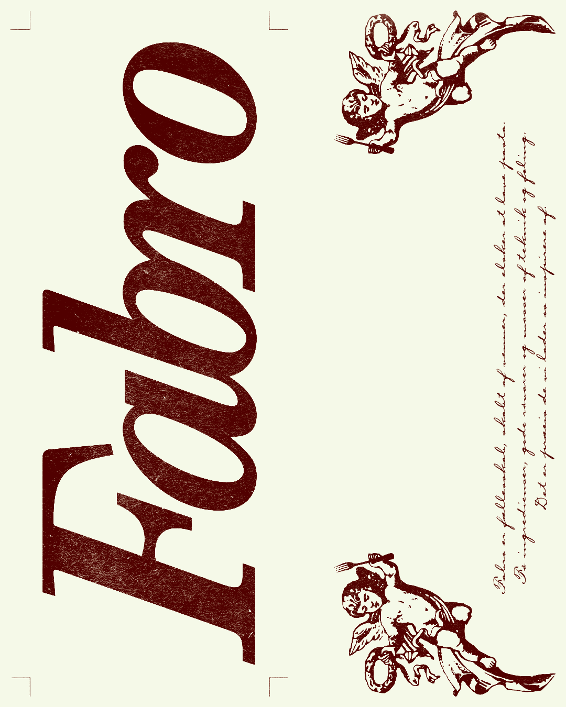
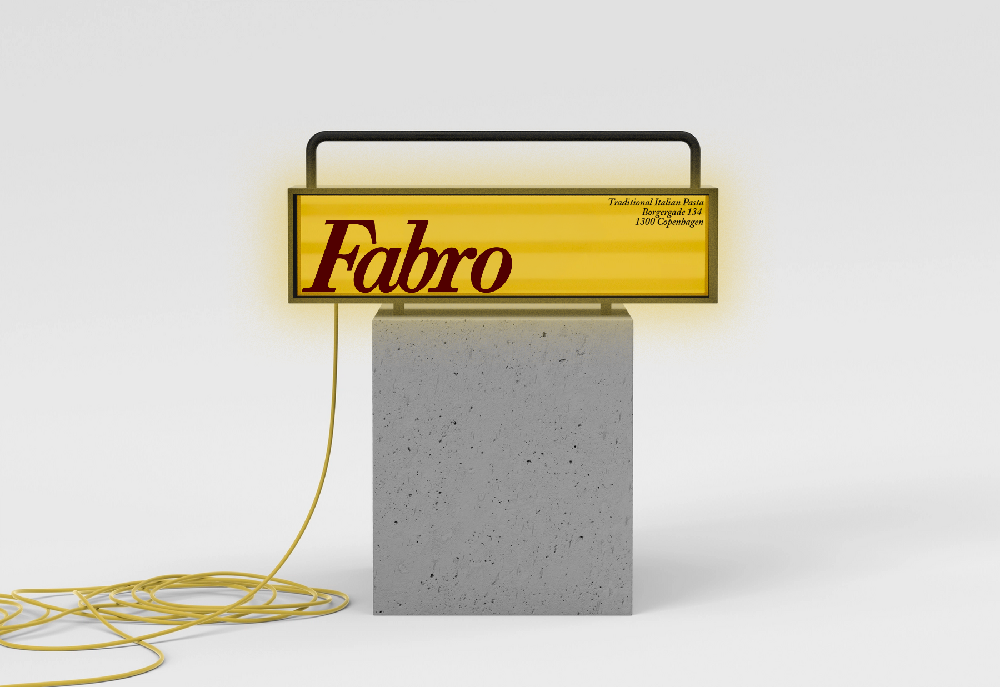
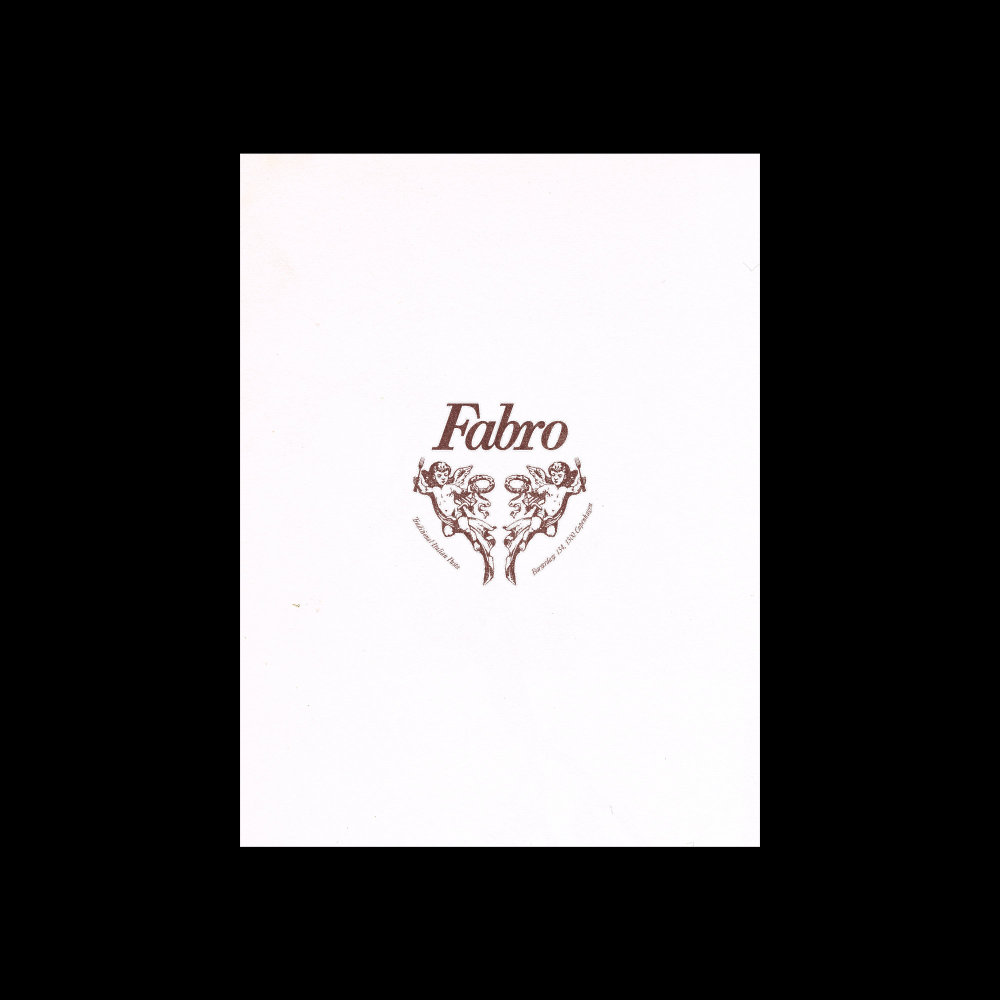
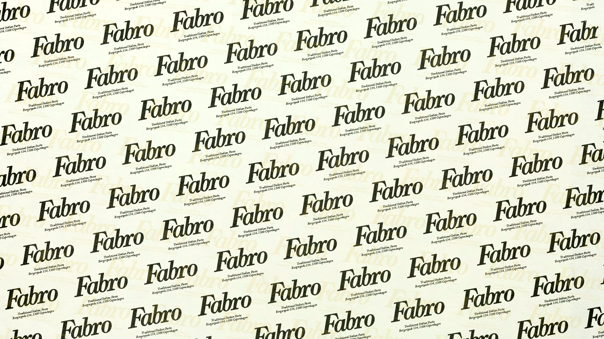
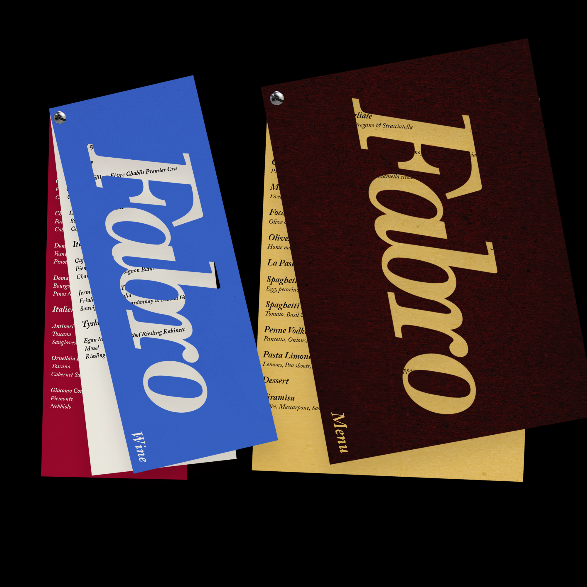
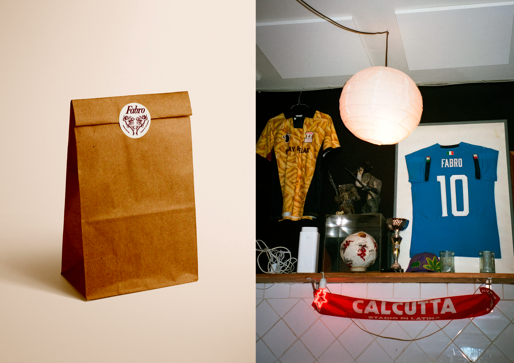
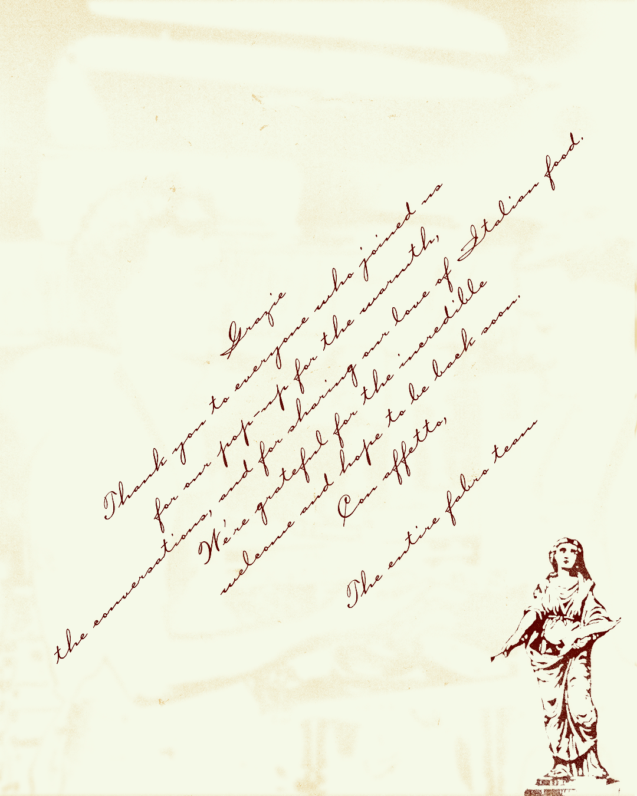

Fàbro
Fàbro is a small pasta counter on the corner of Fredericiagade and Borgergade — no reservations, plastic chairs on the sidewalk, wine poured a little too generously. The identity leans into that: a nostalgic script wordmark, a pair of cherubs holding cutlery instead of arrows, and a print system built to feel handled and a little worn before it even leaves the printer.

Signage
The lightbox above the door borrows the yellow of a corner pizzeria awning — unmistakable at night against pale Copenhagen brick, a block before you can read what it says.


Mark
The crest is lifted from vintage ephemera and redrawn holding a fork instead of a bow — a small joke that turns into a wax-seal stamp across bags, matchboxes and stationery.


Menu
Screw-bound cards in blue, burgundy and gold — one per course — with the italic Fàbro running the length of the spine, and the actual menu set plainly enough to read by candlelight.

Takeaway & Table
The small stuff carries the identity just as far as the sign does — a matchbox worth pocketing, a bag worth reusing.



Grazie — from the corner of Fredericiagade and Borgergade.